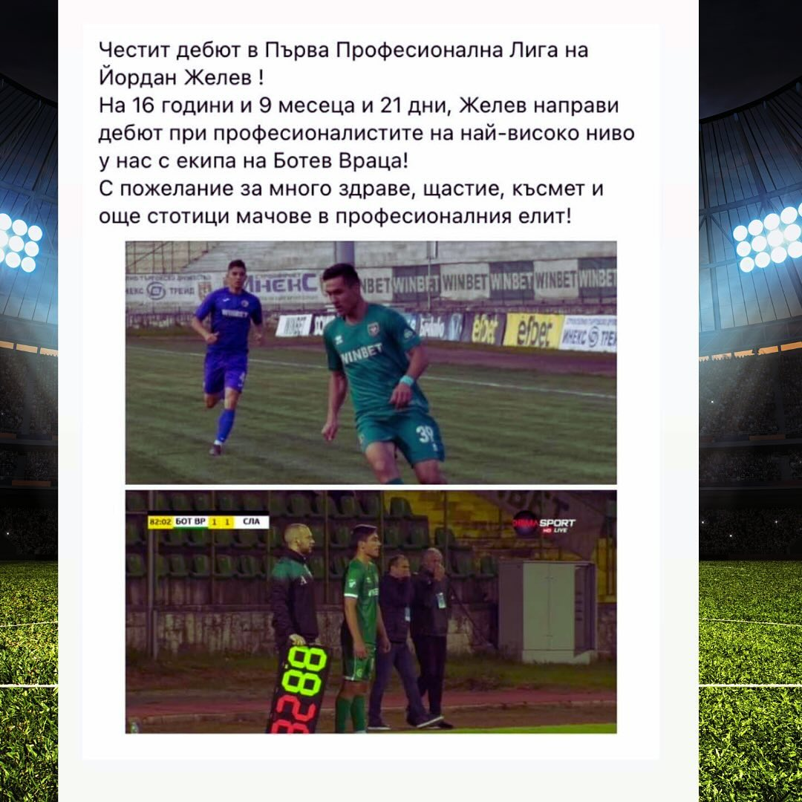
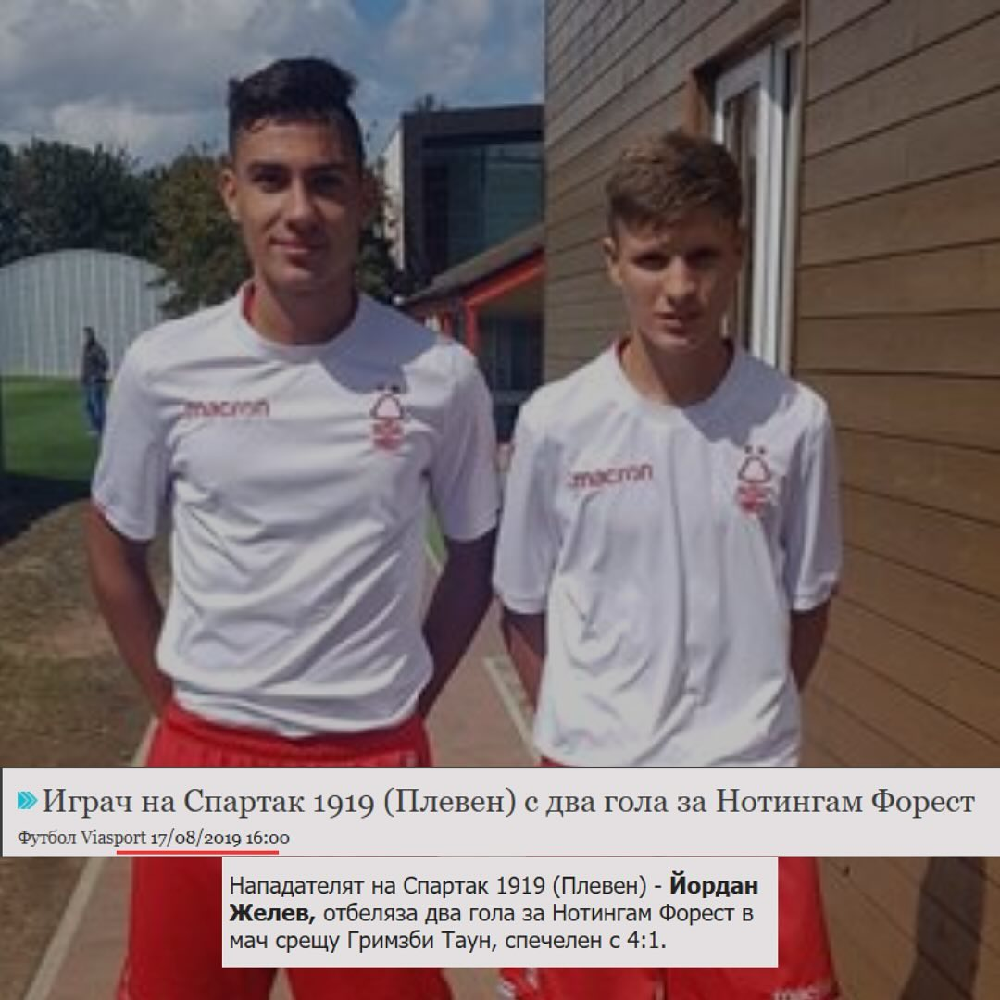

Дебют в елита
Първа лига на 16 г.

За треньора
Йордан Желев — треньор по индивидуално футболно развитие
Become Pro е създаден от човек, който знае какво означава да гониш футболна мечта от малък.
Като бивш футболист с дебют в Първа лига на 16 години и опит в национален отбор U15, днес използвам личния си път, за да помагам на млади играчи да тренират по-структурирано, по-уверено и с ясна цел.
Футболният път
Доверието не идва от красиви обещания. Идва от реален път, реални мачове и моменти, в които си бил на мястото на играча.
Този опит помага в работата с младите футболисти: да разбираме напрежението, несигурността, амбицията и нуждата от ясна посока.


Подходът
Вярвам, че развитието не идва от случайни упражнения. Идва от правилен фокус, постоянство, корекция и тренировки, които се пренасят в реална игра.
Затова в Become Pro всяка тренировка има посока. Всяко упражнение има причина. И всеки играч трябва да знае не само какво прави, а и защо го прави.
Дебют в Първа лига на 16 години и опит с национален отбор U15.
Всяка тренировка има конкретен фокус — техника, скорост, увереност или решения в игра.
Играчът получава обратна връзка, за да разбере какво да промени и защо.
Целта е наученото от тренировката да се вижда в реални игрови ситуации.
Започни целенасочено
Избери онлайн програма или запази индивидуална тренировка и започни да работиш целенасочено върху играта си.